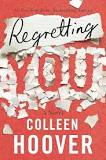

All the Bright Places takes place in modern day Indiana and follows two teenagers named Violet and
Finch. Finch is a boy with a harsh past who struggles with mental illness, even though his family
and friends won't admit it.
“Regretting You”
by Colleen Hoover

Book Cover
Morgan Grant and her sixteen-year-old daughter, Clara, would like nothing more than to be nothing
alike. Morgan is determined to prevent her daughter from making the same mistakes she did. By
getting pregnant and married way too young, Morgan put her own dreams on hold.
“Where the Crawdads Sing”
by Delia Owens
Book Cover
A coming-of-age story and murder mystery set in the marshes of North Carolina, weaving nature and
human emotion.
“Sapiens: A Brief History of Humankind”
by Yuval Noah Harari
Book Cover
A fascinating overview of the history of humans from the Stone Age to the modern age, exploring how
biology and history have defined us.
“The Alchemist”
by Paulo Coelho
Book Cover
A mystical tale of Santiago, a shepherd boy who dreams of finding treasure and discovering his
personal legend.
“Becoming”
by Michelle Obama
Book Cover
The former First Lady shares her deeply personal journey from childhood to life in the White House.
“1984”
by George Orwell
Book Cover
A dystopian novel about a totalitarian regime that controls every aspect of life and the consequences
of mass surveillance.
“Little Fires Everywhere”
by Celeste Ng
Book Cover
A story exploring the intertwined lives of the Richardson family and an enigmatic mother and daughter
who upend their lives.
“The Silent Patient”
by Alex Michaelides
Book Cover
A psychological thriller about a woman who stops speaking after committing a shocking act and the
therapist determined to uncover why.
“Circe”
by Madeline Miller
Book Cover
A retelling of the story of Circe, a powerful witch from Greek mythology, as she finds her own path
and identity.
“The Book Thief”
by Markus Zusak
Book Cover
Set in Nazi Germany, a young girl finds solace in stealing books and sharing them during dark times.
“Pachinko”
by Min Jin Lee
Book Cover
An epic family saga about Korean immigrants in Japan, dealing with identity, survival, and hope
across generations.